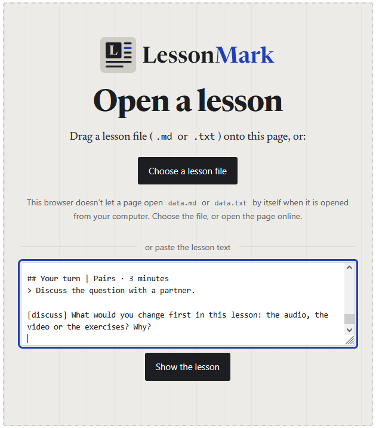
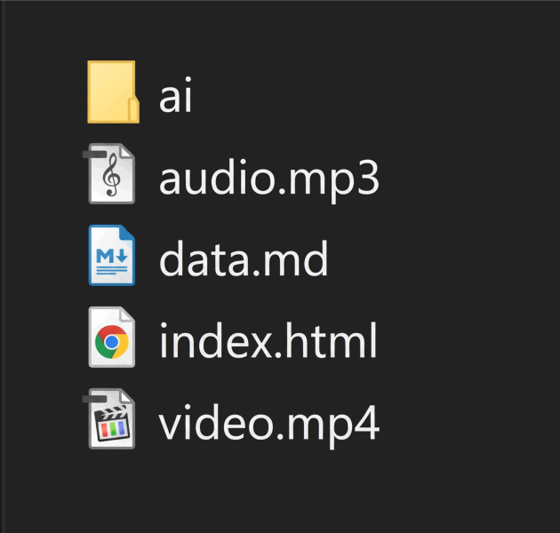

- Just the part you needEach exercise plays only the part it needs.
- Answers that check themselvesCheck, Show and Clear on every exercise.
- Help when students need itA word bank to open, and an answer key at the end.
- Phones, projectors, paperSix looks, light and dark, and clean printing.
Choice 1Make a lesson from a YouTube video.
About 15 minutes. You need a YouTube link and a free Google account for Gemini.
Get the script of the video
Download the first instructions file, open it and fill in your choices: the link, your learners, their level, the class length and the style. This is the only place you answer them; they travel with the script to the next step. Then copy the whole file and paste it into Gemini.
A good answer starts with your choices, and has times at the start of every line, like this:
[01:26–01:40] Designer: This project is a very holistic design approach towards architecture, interiors, landscape, art, and furniture… [01:41–01:55] Designer: Walking into the space, your eye is immediately drawn to the large skylight…Did Gemini give you a summary? Write back: “Please give me the full word-for-word transcript with times.”
Copy Gemini’s whole answer. You’ll need it in the next step.
Ask an AI to write the lesson
Open a free AI assistant: DeepSeek, Claude or ChatGPT. Download these two files:
- Attach
SKILL.mdto the chat (the + or paperclip button). It teaches the AI how to write a LessonMark lesson. - Paste Gemini’s whole answer at the end of
3-make-the-lesson.txt, then copy everything and send it. Your choices from step 1 come with it.
Attach SKILL.md every time. It shows the AI the exact format, so your lesson opens cleanly.
- Attach
Open your lesson
The AI answers with your lesson in a box. Use its Copy button (or Download, if it has one):
Then open LessonMark online, paste the lesson into the box (or open the downloaded file) and click Show the lesson.

Check it, then teach
Read the lesson as your students will, and try every exercise. The AI is good at the format, but it can still get the English wrong, so you are the final check.
A red box at the top? It lists mistakes in the lesson file. Copy its lines, paste them back to the AI and ask it to fix them.
To give the lesson to your students, save it as a file (the AI’s Download button, or paste it into Notepad or TextEdit and save it as
data.md). Students open the same page and choose the file.
Choice 2Use your own audio or video.
For recordings of your own: a podcast extract, an interview, yourself. Everything stays on your computer.
Download the starter kit
Unzip it. You’ll find a short demo lesson with an audio file and a video file, and a folder called
aiwith everything for the next steps.Download the starter kit (.zip)

Open the demo lesson
Double-click
index.html. The first time, Chrome and Edge ask you to choose the lesson’s folder; after that it opens by itself. In other browsers, choose the filedata.md.Listen to the audio and watch the video: they explain what you can change.
Put in your own recordings
Copy your files into the folder with exactly these names, replacing the demo files:
audio.mp3andvideo.mp4.Make the lesson
With AI: in Gemini, attach your recording and paste
ai/2-script-from-audio.txt. Then make the lesson as in choice 1, step 2. Save the AI’s answer asdata.mdin the folder, replacing the demo.By hand: open
data.mdin Notepad or TextEdit, change the words and save. See what you can change.Share it
Send students the whole folder as a zip, or upload the folder to your website.
YouTube videos play only online. For YouTube lessons, use LessonMark online instead (choice 1).
Going furtherChange anything, by hand.
A lesson is a plain text file. Open it in Notepad or TextEdit, change a few characters, save, and reload the page.
Make a sentence false
The letter at the end is the answer: [t] for true, [f] for false.
Play a different part
Change the start and end times (minutes:seconds).
Add a gap
Put a word in curly brackets. Students type it in.
Change the look
Six styles: classic, modern, editorial, blueprint, concrete, notebook. Students can switch with the Aa button too.
MoreExamples, files and details.
- House tourA complete C1 lesson for architects, made from a YouTube video.
- Feature guideA lesson about Venice that shows every exercise type, with how it’s written.
- ReferenceEvery tag and option, with examples to copy.
- Instructions for AIThe prompts, SKILL.md, the full notation, and the skill zip for Claude.
- Starter kitDemo lesson, audio, video and AI files in one zip.
- Source codeLessonMark on GitHub. Free and open (MIT licence).